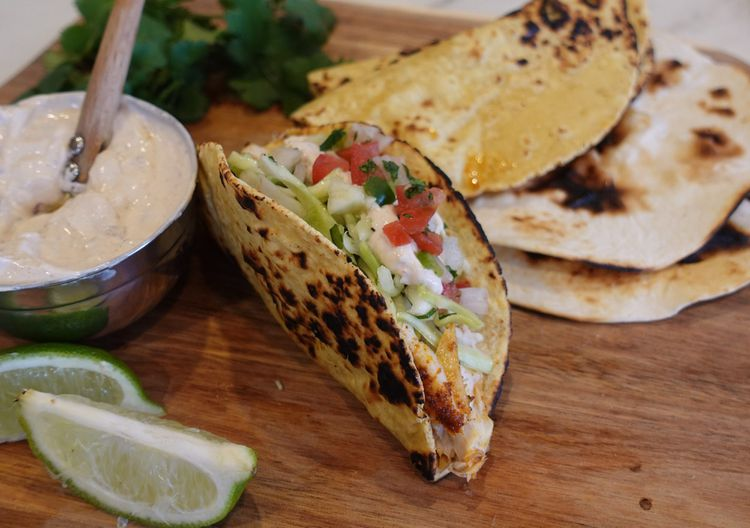

Home
Easy Sheet Pan Fish Tacos

Description
Flaky white fish with crusty, caramelized edges is topped with a cilantro
slaw and drizzled with a smoky sour cream sauce in this simple fish taco
recipe. Baking the fish on a sheet pan is a little heathier and a lot less
messy than frying it, and means cleanup will be a breeze! For family
dinners or casual get-togethers, set this up as a taco bar with other
toppings such as pico de gallo, avocado slices, pickled red onions,
crumbled cotija cheese, and black beans.
Ingredients
Fish Tacos
- 1 tbsp of chili powder
- 1 tbsp of ground paprika
- 1 tbsp of ground cumin
- 1 tbsp of onion powder
- 1 tbsp of kosher salt
- ½ tbsp of ground black pepper
- 3 tbsp of olive oil
- 4 (5 Oz) mahi mahi fillets
- 8 small flour tortillas
- 1 medium lime (cut into wedges)
Slaw
- 4 cups coleslaw mix
- ½ cup finely chopped fresh cilantro
- 1 medium jalapeno pepper (seeded and minced)
- 2 tablespoons olive oil
- 1 medium lime (juiced)
- 1 teaspoon red wine vinegar
- ¼ teaspoon garlic powder
- ¼ teaspoon kosher salt
- ¼ teaspoon ground black pepper
Crema
- 1 (8 Oz) container sour cream
- 1 canned chipotle pepper in adobo (finely chopped)
- 1 tablespoon adobo sauce
- ¼ teaspoon kosher salt
Directions
-
Preheat the oven to 425 degrees F (220 degrees C). Line a rimmed baking
sheet with foil.
-
Mix together chili powder, paprika, cumin, onion powder, salt, and
pepper for tacos in a small bowl until well combined.
-
Brush 2 tablespoons oil all over the prepared pan, then add mahi mahi
fillets. Drizzle remaining 1 tablespoon oil over the fillets and rub to
coat. Sprinkle spice mixture evenly over both sides of the fillets.
-
Bake in the preheated oven until fish flakes evenly with a fork and
drippings are caramelized, 10 to 12 minutes.
-
While the fish is baking, prepare slaw by combining coleslaw mix,
cilantro, jalapeno pepper, oil, lime juice, vinegar, garlic powder,
salt, and pepper in a bowl; toss until well combined.
-
Stir together sour cream, chipotle in adobo, adobo sauce, and salt for
crema together in a small bowl.
- Char tortillas over a gas flame.
- Remove fish from the oven and flake it with a fork.
-
Fill tortillas with fish and slaw. Drizzle with crema and squeeze lime
wedges over top.